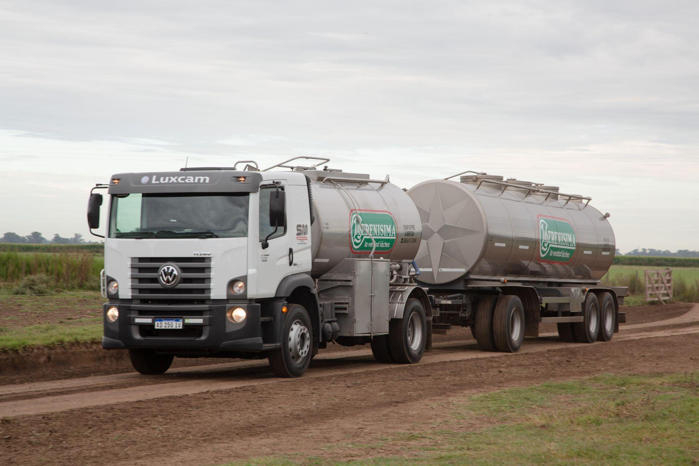

Transporte

Una vez obtenida y almacenada en los tanques refrigerados de los tambos, la leche es transportada hacia las plantas industriales mediante camiones cisterna especialmente diseñados para mantener bajas
temperaturas durante todo el recorrido.
El mantenimiento de la cadena de frío es fundamental para conservar la calidad de la leche y evitar el desarrollo de microorganismos que puedan afectar sus propiedades. Durante el transporte se realizan
controles de temperatura y condiciones de almacenamiento para asegurar que la materia prima llegue en óptimas condiciones a la planta de procesamiento.
Aspectos importantes
● Uso de camiones cisterna refrigerados.
● Mantenimiento de la cadena de frío.
● Control de temperatura durante el traslado.
● Conservación de la calidad de la leche.
● Traslado seguro hacia las plantas industriales.
Objetivo de esta etapa
● Garantizar que la leche llegue a la planta industrial en condiciones adecuadas para continuar con su procesamiento, conservando su calidad, frescura y seguridad alimentaria.